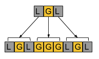

Submissions
Submissions
Problem A. Counting Sheep
| Small input 7 points | |
| Large input 8 points |

Problem
Bleatrix Trotter the sheep has devised a strategy that helps her fall asleep faster. First, she picks a number N. Then she starts naming N, 2 × N, 3 × N, and so on. Whenever she names a number, she thinks about all of the digits in that number. She keeps track of which digits (0, 1, 2, 3, 4, 5, 6, 7, 8, and 9) she has seen at least once so far as part of any number she has named. Once she has seen each of the ten digits at least once, she will fall asleep.
Bleatrix must start with N and must always name (i + 1) × N directly after i × N. For example, suppose that Bleatrix picks N = 1692. She would count as follows:
- N = 1692. Now she has seen the digits 1, 2, 6, and 9.
- 2N = 3384. Now she has seen the digits 1, 2, 3, 4, 6, 8, and 9.
- 3N = 5076. Now she has seen all ten digits, and falls asleep.
What is the last number that she will name before falling asleep? If she will
count forever, print INSOMNIA instead.
Input
The first line of the input gives the number of test cases, T. T test cases follow. Each consists of one line with a single integer N, the number Bleatrix has chosen.
Output
For each test case, output one line containing Case #x: y, where
x is the test case number (starting from 1) and y is
the last number that Bleatrix will name before falling asleep, according to
the rules described in the statement.
Limits
1 ≤ T ≤ 100.
Small dataset
0 ≤ N ≤ 200.
Large dataset
0 ≤ N ≤ 106.
Sample
|
Input |
Output |
5 0 1 2 11 1692 |
Case #1: INSOMNIA Case #2: 10 Case #3: 90 Case #4: 110 Case #5: 5076 |
In Case #1, since 2 × 0 = 0, 3 × 0 = 0, and so on, Bleatrix will never see any digit other than 0, and so she will count forever and never fall asleep. Poor sheep!
In Case #2, Bleatrix will name 1, 2, 3, 4, 5, 6, 7, 8, 9, 10. The 0 will be the last digit needed, and so she will fall asleep after 10.
In Case #3, Bleatrix will name 2, 4, 6... and so on. She will not see the digit 9 in any number until 90, at which point she will fall asleep. By that point, she will have already seen the digits 0, 1, 2, 3, 4, 5, 6, 7, and 8, which will have appeared for the first time in the numbers 10, 10, 2, 30, 4, 50, 6, 70, and 8, respectively.
In Case #4, Bleatrix will name 11, 22, 33, 44, 55, 66, 77, 88, 99, 110 and then fall asleep.
Case #5 is the one described in the problem statement. Note that it would only show up in the Large dataset, and not in the Small dataset.
| Small input 10 points | |
| Large input 10 points |
Problem
The Infinite House of Pancakes has just introduced a new kind of pancake! It has a happy face made of chocolate chips on one side (the "happy side"), and nothing on the other side (the "blank side").
You are the head waiter on duty, and the kitchen has just given you a stack of pancakes to serve to a customer. Like any good pancake server, you have X-ray pancake vision, and you can see whether each pancake in the stack has the happy side up or the blank side up. You think the customer will be happiest if every pancake is happy side up when you serve them.
You know the following maneuver: carefully lift up some number of pancakes (possibly all of them) from the top of the stack, flip that entire group over, and then put the group back down on top of any pancakes that you did not lift up. When flipping a group of pancakes, you flip the entire group in one motion; you do not individually flip each pancake. Formally: if we number the pancakes 1, 2, ..., N from top to bottom, you choose the top i pancakes to flip. Then, after the flip, the stack is i, i-1, ..., 2, 1, i+1, i+2, ..., N. Pancakes 1, 2, ..., i now have the opposite side up, whereas pancakes i+1, i+2, ..., N have the same side up that they had up before.
For example, let's denote the happy side as + and the blank side
as -. Suppose that the stack, starting from the top, is
--+-. One valid way to execute the maneuver would be to pick up
the top three, flip the entire group, and put them back down on the remaining
fourth pancake (which would stay where it is and remain unchanged). The new
state of the stack would then be -++-. The other valid ways would
be to pick up and flip the top one, the top two, or all four. It would not be
valid to choose and flip the middle two or the bottom one, for example; you can
only take some number off the top.
You will not serve the customer until every pancake is happy side up, but you don't want the pancakes to get cold, so you have to act fast! What is the smallest number of times you will need to execute the maneuver to get all the pancakes happy side up, if you make optimal choices?
Input
The first line of the input gives the number of test cases, T. T
test cases follow. Each consists of one line with a string S, each
character of which is either + (which represents a pancake that is
initially happy side up) or - (which represents a pancake that is
initially blank side up). The string, when read left to right, represents the
stack when viewed from top to bottom.
Output
For each test case, output one line containing Case #x: y, where
x is the test case number (starting from 1) and y is
the minimum number of times you will need to execute the maneuver to get all
the pancakes happy side up.
Limits
1 ≤ T ≤ 100.
Every character in S is either + or -.
Small dataset
1 ≤ length of S ≤ 10.
Large dataset
1 ≤ length of S ≤ 100.
Sample
|
Input |
Output |
5 - -+ +- +++ --+- |
Case #1: 1 Case #2: 1 Case #3: 2 Case #4: 0 Case #5: 3 |
In Case #1, you only need to execute the maneuver once, flipping the first (and only) pancake.
In Case #2, you only need to execute the maneuver once, flipping only the first pancake.
In Case #3, you must execute the maneuver twice. One optimal solution is to
flip only the first pancake, changing the stack to --, and then
flip both pancakes, changing the stack to ++. Notice that you
cannot just flip the bottom pancake individually to get a one-move solution;
every time you execute the maneuver, you must select a stack starting from the
top.
In Case #4, all of the pancakes are already happy side up, so there is no need to do anything.
In Case #5, one valid solution is to first flip the entire stack of pancakes to
get +-++, then flip the top pancake to get --++, then
finally flip the top two pancakes to get ++++.
| Small input 10 points | |
| Large input 20 points |
Problem
A jamcoin is a string of N ≥ 2 digits with the following properties:
- Every digit is either
0or1. - The first digit is
1and the last digit is1. - If you interpret the string in any base between 2 and 10, inclusive, the resulting number is not prime.
Not every string of 0s and 1s is a jamcoin. For
example, 101 is not a jamcoin; its interpretation in base 2 is 5,
which is prime. But the string 1001 is a jamcoin: in bases 2
through 10, its interpretation is 9, 28, 65, 126, 217, 344, 513, 730, and 1001,
respectively, and none of those is prime.
We hear that there may be communities that use jamcoins as a form of currency. When sending someone a jamcoin, it is polite to prove that the jamcoin is legitimate by including a nontrivial divisor of that jamcoin's interpretation in each base from 2 to 10. (A nontrivial divisor for a positive integer K is some positive integer other than 1 or K that evenly divides K.) For convenience, these divisors must be expressed in base 10.
For example, for the jamcoin 1001 mentioned above, a possible set
of nontrivial divisors for the base 2 through 10 interpretations of the jamcoin
would be: 3, 7, 5, 6, 31, 8, 27, 5, and 77, respectively.
Can you produce J different jamcoins of length N, along with proof that they are legitimate?
Input
The first line of the input gives the number of test cases, T. T test cases follow; each consists of one line with two integers N and J.
Output
For each test case, output J+1 lines. The first line must consist of
only Case #x:, where x is the test case number
(starting from 1). Each of the last J lines must consist of a jamcoin of
length N followed by nine integers. The i-th of those nine integers
(counting starting from 1) must be a nontrivial divisor of the jamcoin when
the jamcoin is interpreted in base i+1.
All of these jamcoins must be different. You cannot submit the same jamcoin in two different lines, even if you use a different set of divisors each time.
Limits
T = 1. (There will be only one test case.)
It is guaranteed that at least J distinct jamcoins of length N
exist.
Small dataset
N = 16.
J = 50.
Large dataset
N = 32.
J = 500.
Note that, unusually for a Code Jam problem, you already know the exact contents of each input file. For example, the Small dataset's input file will always be exactly these two lines:
1
16 50
So, you can consider doing some computation before actually downloading an input file and starting the clock.
Sample
|
Input |
Output |
1 6 3 |
Case #1: 100011 5 13 147 31 43 1121 73 77 629 111111 21 26 105 1302 217 1032 513 13286 10101 111001 3 88 5 1938 7 208 3 20 11 |
In this sample case, we have used very small values of N and J for ease of explanation. Note that this sample case would not appear in either the Small or Large datasets.
This is only one of multiple valid solutions. Other sets of jamcoins could have been used, and there are many other possible sets of nontrivial base 10 divisors. Some notes:
-
110111could not have been included in the output because, for example, it is 337 if interpreted in base 3 (1*243 + 1*81 + 0*27 + 1*9 + 1*3 + 1*1), and 337 is prime. -
010101could not have been included in the output even though10101is a jamcoin, because jamcoins begin with1. -
101010could not have been included in the output, because jamcoins end with1. -
110011is another jamcoin that could have also been used in the output, but could not have been added to the end of this output, since the output must contain exactly J examples. -
For the first jamcoin in the sample output, the first number after
100011could not have been either 1 or 35, because those are trivial divisors of 35 (100011in base 2).
| Small input 10 points | |
| Large input 25 points |
Problem
Long ago, the Fractal civilization created artwork consisting of linear
rows of tiles. They had two types of tile that they could use: gold
(G) and lead (L).
Each piece of Fractal artwork is based on two parameters: an original sequence of K tiles, and a complexity C. For a given original sequence, the artwork with complexity 1 is just that original sequence, and the artwork with complexity X+1 consists of the artwork with complexity X, transformed as follows:
- replace each
Ltile in the complexity X artwork with another copy of the original sequence - replace each
Gtile in the complexity X artwork with KGtiles
For example, for an original sequence of LGL, the pieces of
artwork with complexity 1 through 3 are:
- C = 1:
LGL(which is just the original sequence) - C = 2:
LGLGGGLGL - C = 3:
LGLGGGLGLGGGGGGGGGLGLGGGLGL
Here's an illustration of how the artwork with complexity 2 is generated from the artwork with complexity 1:

You have just discovered a piece of Fractal artwork, but the tiles are too
dirty for you to tell what they are made of. Because you are an expert
archaeologist familiar with the local Fractal culture, you know the values of
K and C for the artwork, but you do not know the original
sequence. Since gold is exciting, you would like to know whether there is at
least one G tile in the artwork. Your budget allows you to hire
S graduate students, each of whom can clean one tile of your choice (out
of the KC tiles in the artwork) to see whether the
tile is G or L.
Is it possible for you to choose a set of no more than S specific tiles
to clean, such that no matter what the original pattern was, you will be
able to know for sure whether at least one G tile is present in
the artwork? If so, which tiles should you clean?
Input
The first line of the input gives the number of test cases, T. T test cases follow. Each consists of one line with three integers: K, C, and S.
Output
For each test case, output one line containing Case #x: y, where
x is the test case number (starting from 1) and y is
either IMPOSSIBLE if no set of tiles will answer your question, or
a list of between 1 and S positive integers, which are the positions of
the tiles that will answer your question. The tile positions are numbered from
1 for the leftmost tile to KC for the rightmost tile.
Your chosen positions may be in any order, but they must all be different.
If there are multiple valid sets of tiles, you may output any of them. Remember that once you submit a Small and it is accepted, you will not be able to download and submit another Small input. See the FAQ for a more thorough explanation. This reminder won't appear in problems in later rounds.
Limits
1 ≤ T ≤ 100.
1 ≤ K ≤ 100.
1 ≤ C ≤ 100.
KC ≤ 1018.
Small dataset
S = K.
Large dataset
1 ≤ S ≤ K.
Sample
|
Input |
Output |
5 2 3 2 1 1 1 2 1 1 2 1 2 3 2 3 |
Case #1: 2 Case #2: 1 Case #3: IMPOSSIBLE Case #4: 1 2 Case #5: 2 6 |
Note: for some of these sample cases, other valid solutions exist.
In sample case #1, there are four possible original sequences: GG,
GL, LG, and LL. They would produce the
following artwork, respectively:
- Original sequence
GG:GGGGGGGG - Original sequence
GL:GGGGGGGL - Original sequence
LG:LGGGGGGG - Original sequence
LL:LLLLLLLL
One valid solution is to just look at tile #2. If tile #2 turns out to be
G, then you will know for sure the artwork contains at least one
G. (You will not know whether the original sequence is
GG, GL, or LG, but that doesn't matter.)
If tile #2 turns out to be L, then you will know that the original
sequence must be LL, so there are no Gs in the
artwork. So 2 is a valid solution.
On the other hand, it would not be valid to just look at tile #1. If it turns
out to be L, you will only know that the original sequence could
have been either LG or LL. If the original sequence
is LG, there is at least one G in the artwork, but if
the original sequence is LL, there are no Gs. So
1 would not be a valid solution.
Note that 1 2 is also a valid solution, because tile #2 already
provides all the information you need. 1 2 3 is not a valid
solution, because it uses too many tiles.
In sample case #2, the artwork must consist of only one tile: either
G or L. Looking at that tile will trivially tell you
whether or not the artwork has a G in it.
In sample case #3, which would not appear in the Small dataset, the artwork
must be either GG, GL, LG, or
LL. You can only look at one tile, and neither of them on its own
is enough to answer the question. If you see L for tile #1, you
will not know whether the artwork is LG or LL, so you
will not know whether any Gs are present. If you see
L for tile #2, you will not know whether the artwork is
GL or LL, so you will not know whether any
Gs are present.
Sample case #4 is like sample case #3, but with access to one more tile. Now you can just look at the entire artwork.
In sample case #5, there are eight possible original sequences, and they would produce the following artwork:
- Original sequence
GGG:GGGGGGGGG - Original sequence
GGL:GGGGGGGGL - Original sequence
GLG:GGGGLGGGG - Original sequence
GLL:GGGGLLGLL - Original sequence
LGG:LGGGGGGGG - Original sequence
LGL:LGLGGGLGL - Original sequence
LLG:LLGLLGGGG - Original sequence
LLL:LLLLLLLLL
One valid solution is to look at tiles #2 and #6. If they both turn out to
be Ls, the artwork must be all Ls. Otherwise, there
must at least one G. Note that 1 2 would not be a
valid solution, because even if those tiles both turn out to be Ls,
that does not rule out an original sequence of LLG.
6 2 would be a valid solution, since the order of the positions
in your solution does not matter.
This year, we had 58,520 registrants, 27,170 contestants with at least one solved dataset on the scoreboard, and 1,710 contestants with perfect scores! We had a full 27 hours of coding fun, with the first correct submission at 2 minutes and 15 seconds. For the fourth year in a row, xiaowuc1 had the first correct submission of the Qualification Round! xiaowuc1 was also the third to a perfect score (49:13), behind Lewin in first place (40:51) and Endagorion in second place (47:47).
The first problem, Counting Sheep, was a relatively simple "try it and see" implementation exercise. Revenge of the Pancakes playfully alluded to a harder pancake-related problem from last year's Qualification round, but admitted a much simpler solution. Coin Jam was an unusual exercise in "mining" for "coins" with certain properties... or easily constructing them outright, if you found the right math trick! Finally, Fractiles was a more complex problem about logic and information.
Congratulations to our 22,154 competitors who earned at least 30 points and advanced to the Round 1 contests; we'll see you soon in Round 1A!
Cast
Problem A (Counting Sheep): Written and prepared by Ian Tullis.
Problem B (Revenge of the Pancakes): Written and prepared by Ian Tullis.
Problem C (Coin Jam): Written and prepared by Ian Tullis.
Problem D (Fractiles): Written by Pablo Heiber and Ian Tullis. Prepared by Jackson Gatenby and Pablo Heiber.
Solutions and other problem preparation and review by David Arthur, Minh Doan, Sumudu Fernando, Jackson Gatenby, Taman (Muhammed) Islam, Sean Lip, Igor Naverniouk, Karol Pokorski, Steve Thomas, Yerzhan Utkelbayev, and Jonathan Wills.
Analysis authors:
- Counting Sheep: Ian Tullis
- Revenge of the Pancakes: Timothy Loh and Pablo Heiber
- Coin Jam: Timothy Loh
- Fractiles: Pablo Heiber
| Category | Asked | Question | Answered | Answer | ||||
|---|---|---|---|---|---|---|---|---|
| [General] Announcement | 1:20 | How much points are needed to qualified to the next round ? | 2:39 | You need 30 points in the Qualification Round to advance to Round 1. |